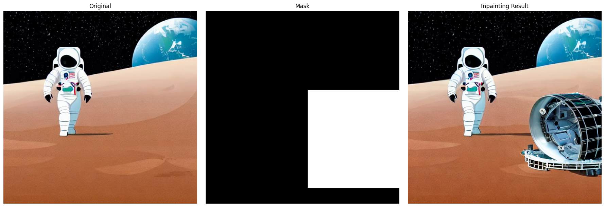
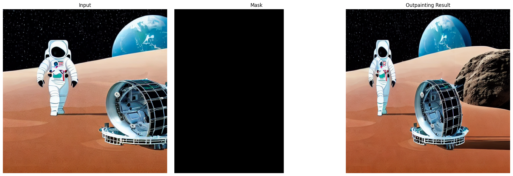
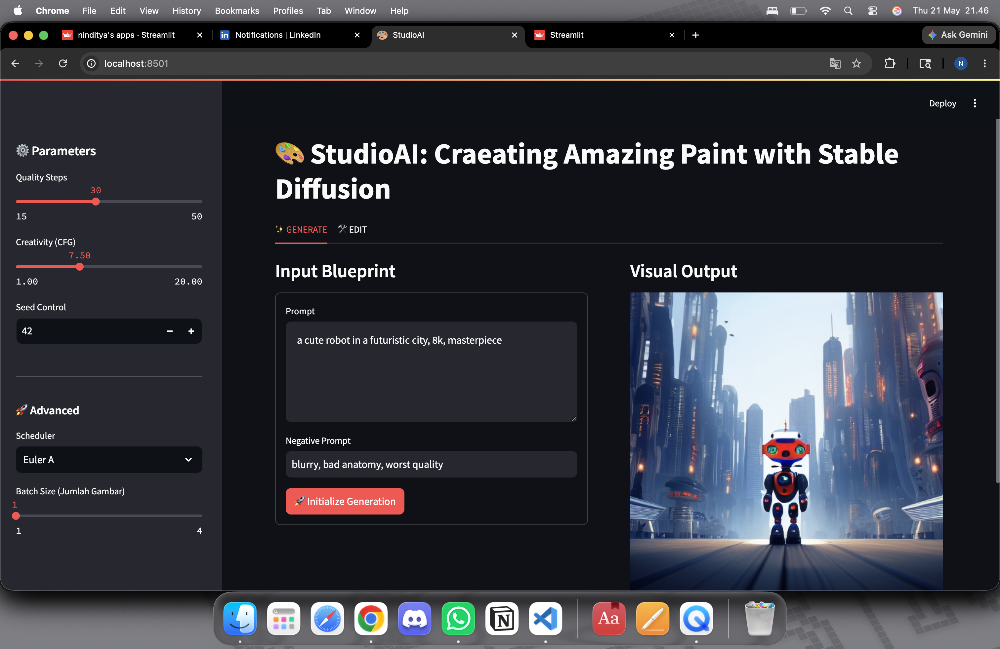
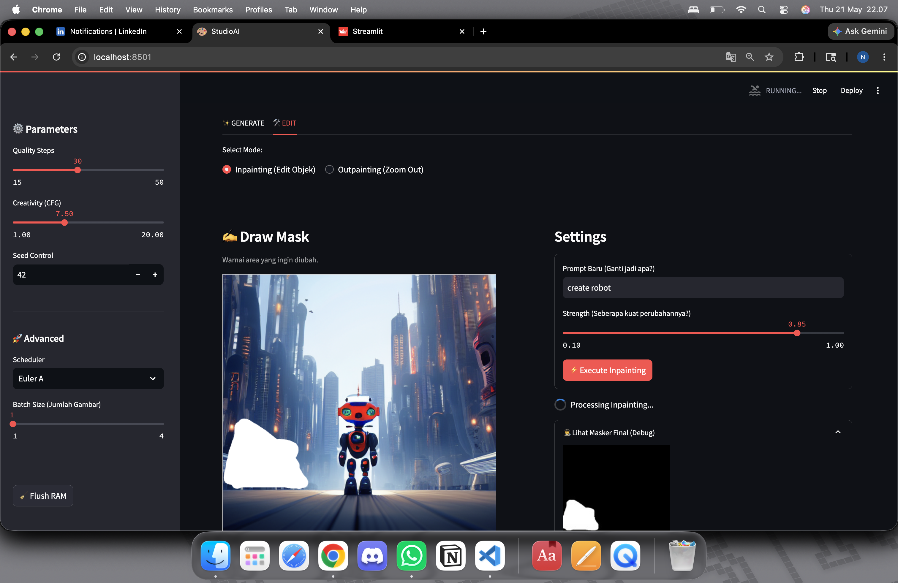

00 · Origin
I wanted to understand what actually moves the output.
Every generative AI tutorial shows a prompt going in and an image coming out. Nobody shows you what happens when you change the guidance scale from 2 to 15 — or why 50 inference steps costs more than 5 but doesn't always look 10× better.
The Bangkit Generative AI Challenge gave me a structured reason to go deeper. The assignment wasn't just "generate images" — it required demonstrating mastery of the three technical pillars: text-to-image generation with hyperparameter control, image refinement through multi-stage pipelines, and a deployed interactive application. That structure forced me to understand each layer before moving to the next.
I chose to build everything on Stable Diffusion v1.5 using the HuggingFace Diffusers library — not the easiest starting point, but the one that gives you the most visibility into what's actually happening inside the model. Three goals drove the project:
- Build intuition through experiments — run systematic comparisons on guidance scale, inference steps, and schedulers so the outputs aren't magic, they're predictable.
- Implement real editing workflows — inpainting and outpainting are standard use cases; understanding them requires working with masks, latent space manipulation, and multi-step pipelines.
- Ship something usable — a Streamlit app with an interactive canvas that lets a real user generate and edit images without writing a line of code.
"The hardest part wasn't generating the image. It was learning which knob to turn when the image was wrong."

First output — text-to-image with default parameters (seed=222, CFG=7.5, 30 steps, DPM++). Prompt: "astronaut with full white spacesuit, standing on a flat moon plain, with earth in the background, minimal detail, 2D digital illustration."
01 · Experiments
Three knobs, systematic comparison.
Before building anything interactive, I ran controlled experiments on the three variables that most affect output quality and style. Each experiment held everything else constant and changed one parameter at a time.
How strictly does the model follow the prompt?
Tested at 2.0, 7.5, and 15.0. Low CFG gives the model freedom to be creative but loosely follows the prompt. High CFG adheres strictly but can over-saturate and lose coherence.
Optimal: 7.5 — best balance of prompt fidelity and visual quality
Quality vs. speed tradeoff
Tested at 5, 15, 30, and 50 steps. At 5 steps the image is incoherent — the denoising process hasn't converged. At 30+ the quality plateaus and the gain from 30 to 50 is barely visible.
Optimal: 30 steps — diminishing returns after this point
Which sampling algorithm fits the style?
Compared Euler A, DPM++, and DDIM on the same prompt. Euler A trends photorealistic; DPM++ excels at flat illustration; DDIM lands in between.
Optimal: DPM++ for the flat 2D illustration target style

Guidance Scale — CFG 2.0 (left, loose/creative) · CFG 7.5 (center, optimal) · CFG 15.0 (right, over-constrained)

Inference Steps — 5 steps (incoherent) · 15 · 30 (optimal) · 50 steps (diminishing returns)
What the experiments actually taught me.
Running these comparisons made the model's behavior legible in a way that reading documentation doesn't. The key insight from the guidance scale test: the model doesn't "understand" the prompt more precisely at higher CFG — it just weights the text conditioning more heavily relative to the image prior. That's why high CFG images feel over-processed — the model is pulling hard in one direction and losing the nuance that comes from balancing multiple signals.
The inference steps test clarified that diffusion models aren't iteratively improving — they're denoising. At 5 steps, the noise hasn't been adequately removed and the image looks like a dream. At 50, the denoising is complete but not more "correct" than at 30. The practical takeaway: spending 66% more compute to go from 30 to 50 steps is rarely worth it for non-critical generation.
| Scheduler |
Characteristic style |
Best for |
Relative speed |
| Euler A |
Photorealistic, organic textures |
Portraits, landscapes |
Fast |
| DPM++ |
Flat, illustrative, clean edges |
2D illustration, icons |
Fast |
| DDIM |
Balanced, deterministic |
Reproducible editing workflows |
Slower |

Scheduler comparison — same prompt, same seed. Left: Euler A (photorealistic) · Center: DPM++ (flat illustration, chosen) · Right: DDIM (balanced)
CFG Scale
Inference Steps
Euler A
DPM++
DDIM
Seed Control
Batch Inference
02 · Refinement
Two-stage generation — base model then refiner.
Single-pass generation has a ceiling. The base model does 80% of the denoising; a second img2img pass picks up the remaining 20% — and the gap in visual quality is noticeable.
The base + refiner pattern treats generation as two separate problems: the base model handles large-scale structure and composition, and the refiner model handles fine-grained detail and texture. In practice this means running the base pipeline with output_type="latent" to pass the intermediate latent representation directly to the refiner without decoding to pixel space — which saves a full encode/decode cycle.
IN
Text prompt + negative prompt + seed
positive: "astronaut on moon, flat 2D illustration" · negative: "blur, low quality, text"
01
Base pipeline — 80% denoising
StableDiffusionPipeline · denoising_end=0.8 · output_type="latent"
SD v1.5
02
Refiner pipeline — img2img pass
StableDiffusionImg2ImgPipeline · strength=0.2 · operates on latent from step 01
Refiner
OUT
Refined image — sharper detail, better coherence
Decoded to pixel space only once · single VAE decode at the end
PNG
The denoising_end=0.8 value is deliberate — it tells the base model to stop 20% early and leave that denoising budget for the refiner. Setting it too low (e.g. 0.5) means the base model hasn't converged on a coherent structure yet and the refiner is working from noise, not from a draft. Setting it too high (e.g. 0.95) leaves almost nothing for the refiner to improve.

Single-pass (left) vs base+refiner (right) — edges and texture are visibly sharper after the refinement pass.

Refiner pattern — base model stops at 80%, img2img refiner handles the remaining 20% of the denoising budget.
03 · Editing
Inpainting and outpainting — editing inside and beyond the frame.
Generation is a starting point. The more interesting engineering is in editing: how do you replace a specific region of an image, and how do you extend it past its original boundaries?
Inpainting: three masking approaches.
Inpainting requires a mask — a binary map telling the model which pixels to regenerate. I implemented three approaches with increasing levels of automation:
- Manual masking (hardcoded) — define the mask programmatically using NumPy array slicing. Fast and precise, but requires knowing the exact pixel coordinates. Used this to add a broken satellite to the moon landscape as a proof of concept.
- Auto-masking with CLIPSeg — describe the region in natural language ("the moon surface"), and CLIPSeg generates a semantic mask by computing similarity between the text embedding and each patch of the image. No pixel coordinates needed — the model finds the region from the description. Required thresholding the CLIPSeg output to a binary mask.
- Interactive canvas masking (Streamlit) — the deployed app uses
streamlit-drawable-canvas to let users paint the mask directly on the image in the browser. The painted region is extracted as a binary mask and passed to the inpainting pipeline.
# CLIPSeg segmentation → binary mask for inpainting
from transformers import CLIPSegProcessor, CLIPSegForImageSegmentation
processor = CLIPSegProcessor.from_pretrained("CIDAS/clipseg-rd64-refined")
model = CLIPSegForImageSegmentation.from_pretrained("CIDAS/clipseg-rd64-refined")
inputs = processor(text=["moon surface"], images=[image], return_tensors="pt", padding=True)
outputs = model(**inputs)
logits = outputs.logits[0]
# Threshold sigmoid activations → binary mask
mask = (torch.sigmoid(logits) > 0.5).float()
mask_pil = Image.fromarray((mask.numpy() * 255).astype("uint8")).resize(image.size)

Manual masking — region selected via NumPy pixel coordinates

CLIPSeg segmentation — probability heatmap before thresholding to binary mask

Auto mask — after sigmoid > 0.5 threshold and morphological dilation

Inpainting result — a broken satellite inserted into the masked region of the moon landscape using a new prompt.
Outpainting: extending the canvas.
Outpainting expands the image in any direction — left, right, up, or down. The approach: pad the original image with a blurred version of itself (to provide contextual hints for the model at the boundary), define the padded region as the mask, and run inpainting on the expanded canvas.
The zoom-out mode chains this operation across 3+ iterations, each time expanding by 128px in all four directions and using a zoom-out prompt ("same scene from farther away, consistent style") to guide the new content. The challenge with chaining is that each iteration compounds any inconsistencies in lighting, perspective, and style — so the prompt needs to be anchor-specific and the strength parameter tuned low enough to preserve the existing content while extending believably.
IN
Original 512×512 image
Starting frame — astronaut on moon
01
Pad canvas by 128px on each side
New size: 768×768 · blurred edge of original used as background fill
02
Build border mask
128px ring around original content = region to regenerate
03
Inpainting on expanded canvas
StableDiffusionInpaintPipeline · prompt guides new content at border
SD Inpaint
04
Repeat × 3 iterations
Each pass expands by another 128px · cumulative zoom-out effect
OUT
1024×1024+ zoomed-out scene
Original image visible at center · new context generated around it
PNG

Outpainting single-pass — canvas expanded 128px, new content generated seamlessly at the edge.

Zoom-out outpainting — 3+ chained passes, original scene visible at center, new context generated around it.
04 · Architecture
Two files, one responsibility each.
The Streamlit app separates generation logic from UI rendering into two files. This wasn't over-engineering — it was the only way to keep the notebook-to-app translation manageable.
Logic layer
All model loading, caching, and generation functions. No Streamlit imports — pure Python functions that take inputs and return images.
- load_pipeline(scheduler) → pipe
- generate(prompt, neg, steps, cfg, seed, n)
- inpaint(image, mask, prompt, strength)
- outpaint(image, direction, prompt)
UI layer
Streamlit components, tab layout, drawable canvas, session state. Calls logic.py functions — no model code lives here.
- Tab 1: Generate (prompt → grid)
- Tab 2: Edit (canvas → inpaint / outpaint)
- Session state: current_image, history
- "Flush RAM" GPU cache clear
Ngrok tunnel
Streamlit runs on localhost inside Colab. Ngrok creates a public HTTPS URL without requiring a cloud deployment or paid hosting.
- pyngrok creates tunnel on port 8501
- Public URL shared for demo access
- Session lifetime tied to Colab runtime
Model caching — why it matters.
Stable Diffusion v1.5 weighs over 3.44 GB. Loading it takes 15–30 seconds on a Colab T4 GPU. Without caching, every generation request would reload the full model from disk — making the app unusable. The solution: @st.cache_resource on the pipeline loader, keyed by scheduler name. The model loads once per session and once per scheduler change. When the user switches from DPM++ to Euler A, only the sampler is swapped — the U-Net weights stay in GPU memory.
# logic.py — cache model by scheduler to avoid full reload
@st.cache_resource
def load_pipeline(scheduler_name: str):
pipe = StableDiffusionPipeline.from_pretrained(
"runwayml/stable-diffusion-v1-5",
torch_dtype=torch.float16,
safety_checker=None
).to("cuda")
schedulers = {
"Euler A": EulerAncestralDiscreteScheduler,
"DPM++": DPMSolverMultistepScheduler,
"DDIM": DDIMScheduler,
}
pipe.scheduler = schedulers[scheduler_name].from_config(pipe.scheduler.config)
return pipe
05 · App Walkthrough
StudioAI — the interface.
Every feature from the research notebook maps to a UI control. Nothing is hardcoded — all parameters are adjustable directly from the browser.

StudioAI in Streamlit — Generate tab active. Left: parameter sidebar (Quality Steps, CFG, Seed Control, Scheduler, Batch Size). Right: prompt input and generated visual output.
Tab 1 — GENERATE.
Input and output are split into two columns so they're visible at the same time — the user can write a new prompt while seeing the previous output. All generation parameters live in the sidebar so the main area stays focused on the creative work.
-
Prompt
Positive + negative prompt — two separate text areas. Negative prompt suppresses common artifacts like blur, bad anatomy, and low quality that frequently appear with SD v1.5.
-
Sidebar
Quality Steps (15–50) — determines how many denoising passes the model runs. Default 30, which is optimal for most cases without wasting compute.
-
Sidebar
Creativity / CFG (1.0–20.0) — controls how closely the model follows the prompt. Default 7.5. Below 5 is too loose; above 12 tends to over-saturate.
-
Sidebar
Seed Control — fixed seed for reproducibility. Same seed + same parameters = identical output. Essential for debugging and incremental editing.
-
Advanced
Scheduler selector — dropdown for Euler A / DPM++ / DDIM. Switching it calls
set_scheduler() in logic.py, swapping the sampler without reloading U-Net weights from disk.
-
Advanced
Batch Size (1–4) — generate up to 4 images from a single prompt. Output is displayed in a 2-column grid, each with a Select button to send to Tab EDIT.
-
Session
st.session_state — the selected image is stored as
current_image, which Tab EDIT reads for inpainting and outpainting operations. Without this, state is lost when tabs switch.

StudioAI — EDIT tab. Left: draw mask canvas over the generated image. Right: new prompt input, strength slider (0.40), and Execute Inpainting button. Mode toggle: Inpainting (Edit Object) / Outpainting (Zoom Out).
Tab 2 — EDIT.
streamlit-drawable-canvas adds a live paintable canvas over the selected image. The drawn region becomes a binary mask that goes directly into the inpainting pipeline. No coordinates, no code — just paint what you want to change.
-
Canvas
Drawable canvas — user paints the region to edit. The brushstroke is extracted as a binary mask (white = regenerate, black = keep) and fed directly into
run_inpainting().
-
Inpaint
Inpainting mode — fill in a new prompt, click Apply.
StableDiffusionInpaintPipeline regenerates only the masked region according to the new prompt; everything else is preserved.
-
Outpaint
Outpainting mode — choose expansion direction (left/right/up/down).
prepare_outpainting() builds a new canvas with a blurred border, then the inpainting pipeline fills the edge seamlessly.
-
UX
Strength parameter (0.0–1.0) — controls how much the model changes the masked region. Low values (0.3–0.5) preserve the original structure; high values (0.8+) give the model full interpretive freedom.
-
UX
Reset Canvas — clears the brushstroke from the canvas without removing the image from session state. Enables fast iteration: edit one area → reset → edit another area on the same image.
Deployment — Ngrok tunnel from Google Colab.
Streamlit runs on localhost:8501 inside the Colab runtime. Ngrok creates an HTTPS tunnel to that port and generates a public URL accessible from any device — no paid cloud deployment, no server configuration needed. The URL stays alive as long as the Colab session runs.
# Jalankan Streamlit di background
subprocess.Popen(["streamlit", "run", "app.py"])
# Buat tunnel ke port 8501
ngrok.set_auth_token("YOUR_TOKEN")
public_url = ngrok.connect(8501).public_url
print(public_url) # → https://xxxx.ngrok.io
Streamlit
drawable-canvas
session_state
cache_resource
Ngrok
Google Colab
07 · Reflection
What building this actually taught me.
The project was an assignment. The learning was not.
- Diffusion models are not black boxes. Once I understood denoising as progressively removing noise from a latent representation — and that guidance scale, steps, and schedulers all shape that noise removal process — the model's behavior became predictable instead of mysterious. Good experiments are the fastest path from "magic" to "mechanism."
- Segmentation and generation are different problems. I went in thinking CLIPSeg would "just work" as an automatic masking tool. Instead I learned that segmentation is probabilistic and context-sensitive, and that the handoff between a segmentation model and a generation model requires explicit engineering (thresholding, dilation, mask format conversion) — not just plumbing.
- Memory management is a first-class concern in production. A research notebook can ignore GPU memory limits because each cell runs once. An interactive app runs arbitrary sequences of operations and has to manage memory deliberately. The "Flush RAM" button wasn't a nice-to-have — it was the difference between an app that works and one that crashes in the demo.
- Architecture pays dividends immediately. Separating logic.py from app.py felt like unnecessary overhead at the start. By the time I was debugging the outpainting chain, it meant I could test the generation functions directly in a notebook without going through Streamlit — which cut debugging time significantly.
- The submission format shapes what you build. Knowing the assignment required a video demo pushed me to prioritize the most visually compelling features — outpainting zoom-out, CLIPSeg auto-masking — over additional hyperparameter variants that would only show up in static images. Constraints are design inputs.
"I didn't just learn how to generate images. I learned the operational discipline that makes generative models work reliably — not just impressively."